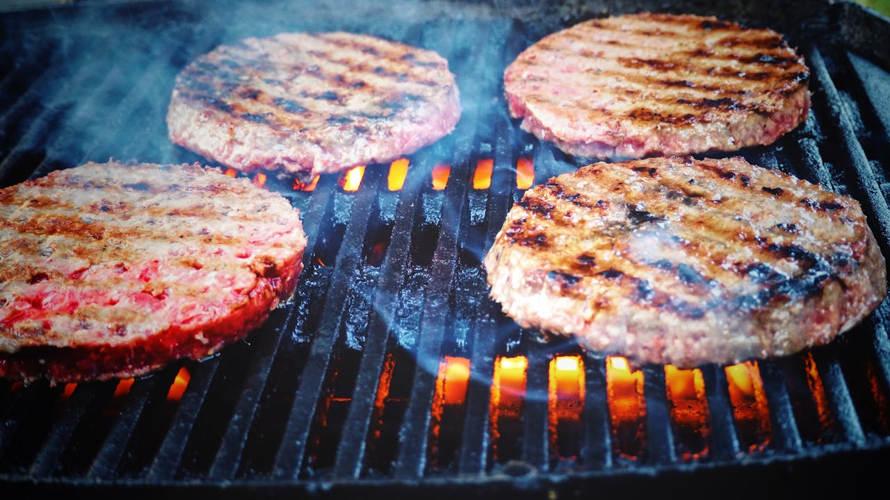
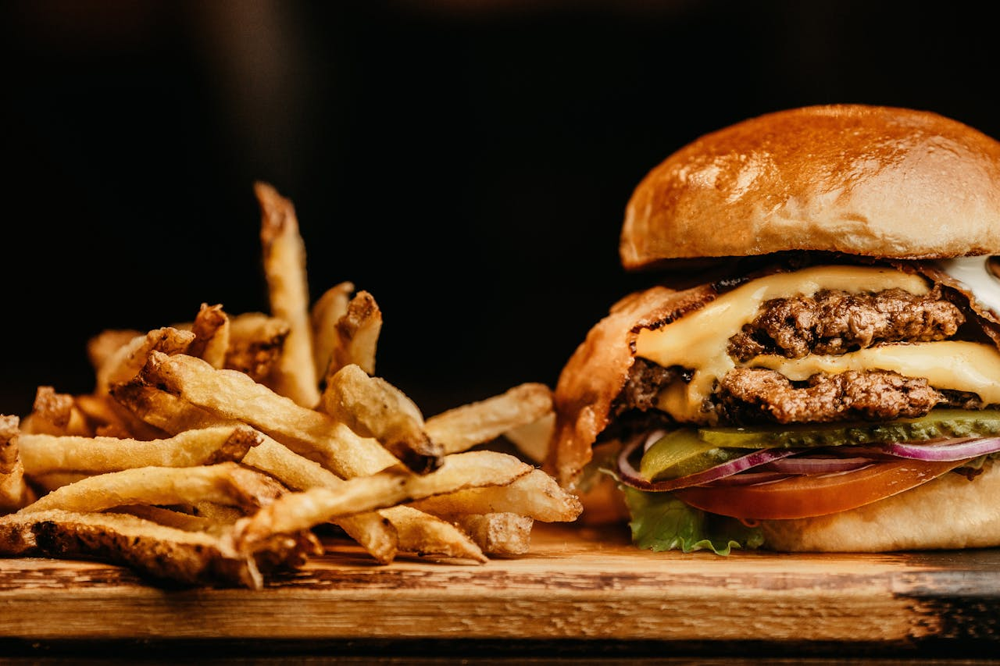

O Segredo do Hambúrguer Perfeito
O hambúrguer é mais do que uma refeição rápida: é uma paixão mundial. Para chegar à versão perfeita, três elementos fazem toda a diferença: carne suculenta, pão macio e molho irresistível. O equilíbrio entre esses ingredientes transforma um simples lanche em uma verdadeira experiência gastronômica.
 